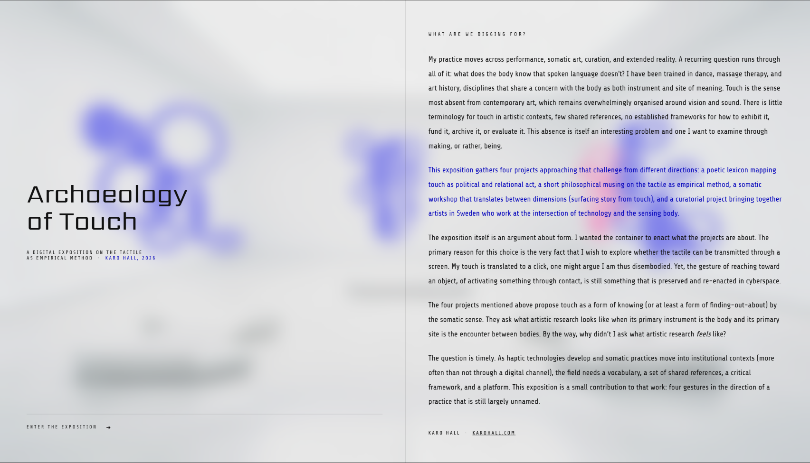
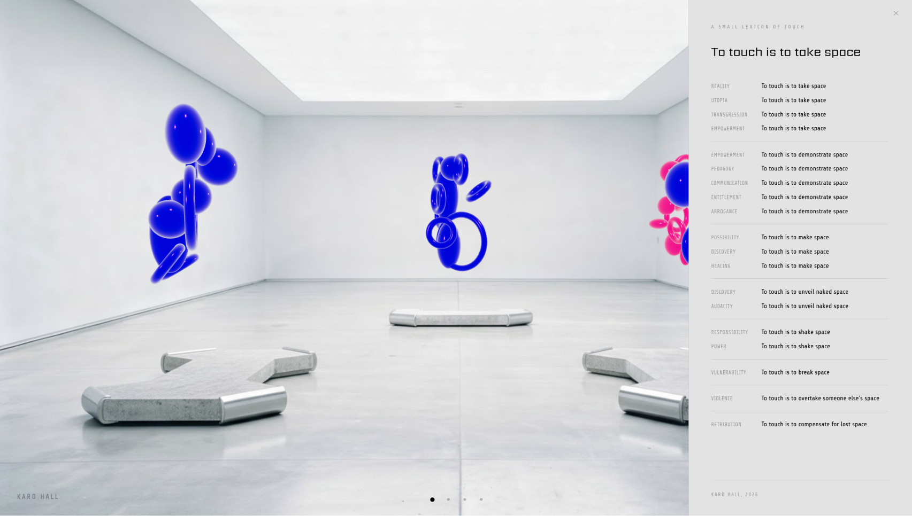
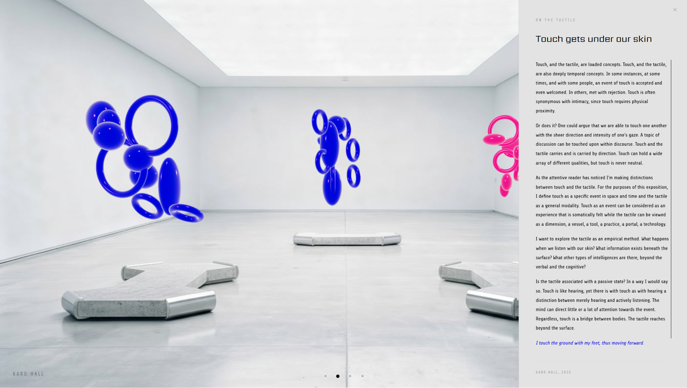
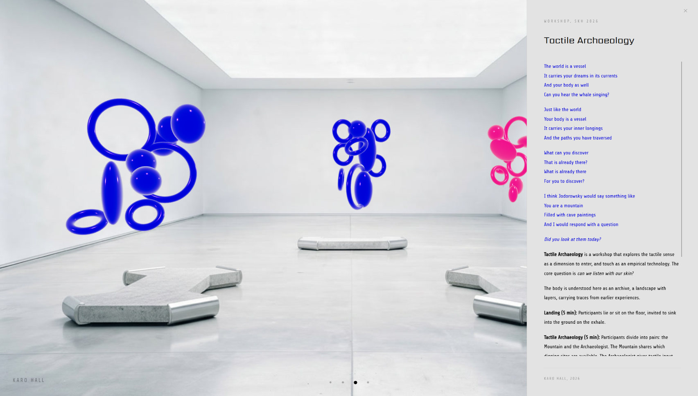
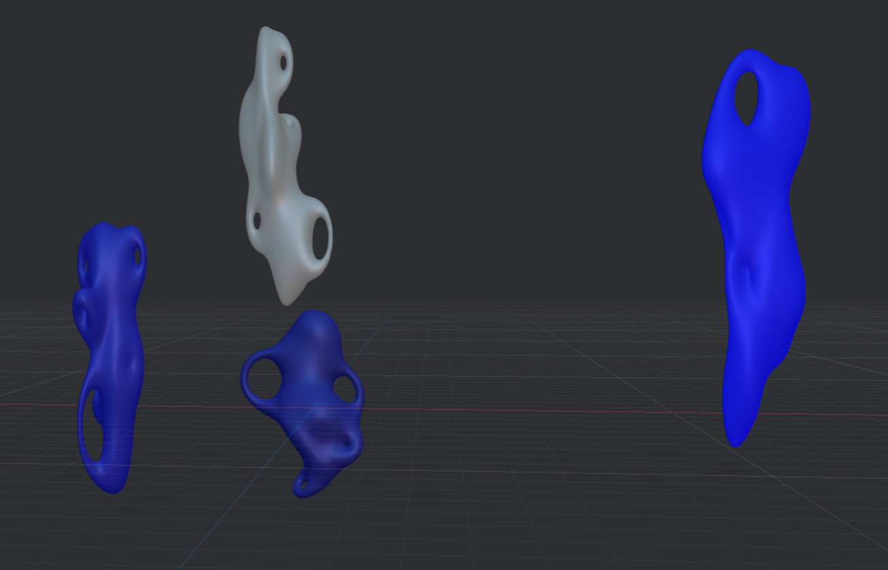

Concept
What are we digging for?
This project represents ongoing research into tactile experience as empirical methodology — expressed through digital tools. An interactive 3D gallery that adopts a white cube aesthetic and asks visitors to do something galleries rarely allow: touch things.
The exposition addresses a significant gap. Touch is the sense most absent from contemporary art, which remains overwhelmingly organised around vision and sound. There are no established frameworks for exhibiting, funding, archiving, or evaluating tactile art. This project begins to build them.
What intelligences exist beyond verbal and cognitive modes?
Live Exposition
The full interactive experience is hosted online — explore the 3D gallery, interact with the objects, and move through the space at karohall.github.io/archaeologyoftouch





The Four Components
- A poetic lexicon mapping touch as a political and relational act
- A philosophical essay on tactile empiricism
- A somatic workshop translating between physical and digital dimensions
- A curatorial project featuring Swedish artists working with technology and sensing bodies
Project Details
- Submitted as open call for artistic research journal
- Hosted at karohall.github.io/archaeologyoftouch
- Designed at 1920×1080 scale
- Built with Spline for 3D interaction
Design Approach
The container as argument
Since tactile experience cannot transmit through screens, the design preserves the gesture — the act of reaching toward and activating objects in digital space. Visitors break typical gallery etiquette by interacting with the 3D objects, turning the interface itself into the argument.
The environment was built to feel liminal: beautiful and slightly disorienting. Backgrounds were generated using Flux AI with prompts like "bank foyer" and "airport terminal" — spaces designed for transit, not dwelling. The effect is an uncanny white cube that unsettles the expectation of passive observation.
Material Decisions
Glossy, alien, ceremonial
Initial sketches explored 3D blob forms in Spline, inspired by ancient ceremonial vessels while maintaining something deliberately alien. Due to a tight deadline, the forms remained as tori and globes — cleaner than originally envisioned, but carrying the right energy.
A glossy finish was prioritised throughout. The glossy aesthetic functions as a cheeky nod to the commodified art world of the 21st century — surfaces that reflect you back at yourself, that invite touch by looking untouchable.

Reflection
When form overshadows function
Working without predetermined constraints surfaced a tension familiar to design practice: the pull between aesthetic intention and usability. Significant time was spent on form — placement of instructions, interaction cues, navigation logic — before usability was treated as an equal concern.
The project is an honest record of that negotiation. It reflects on what it means to design an interface when you're also the one defining what the interface is for.
Usability is important, too.